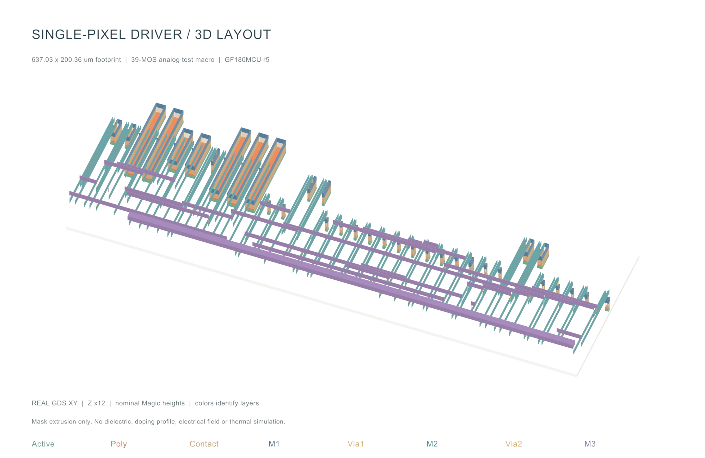
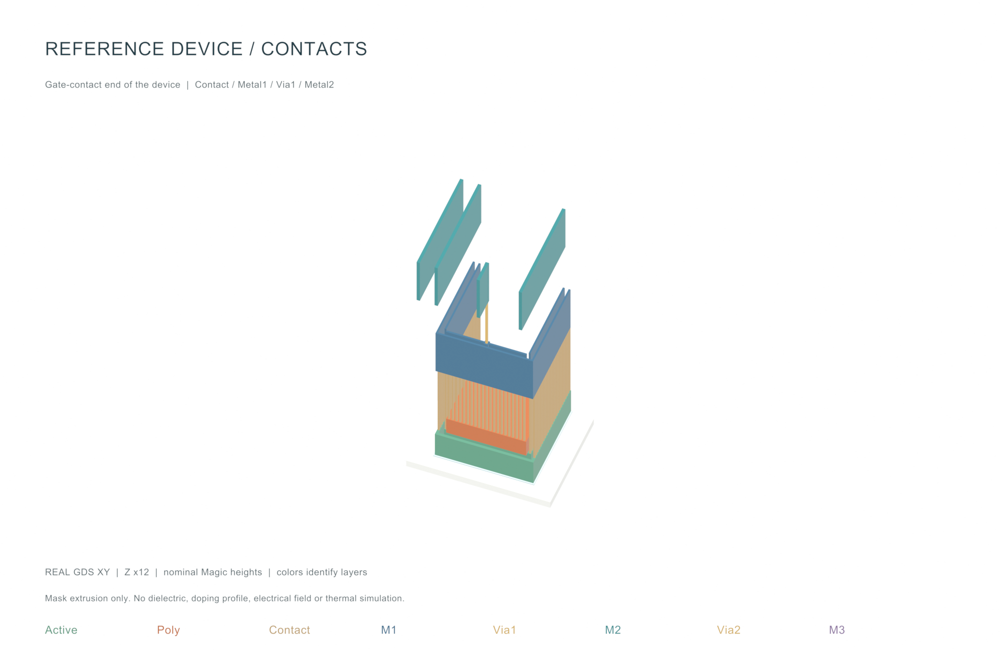
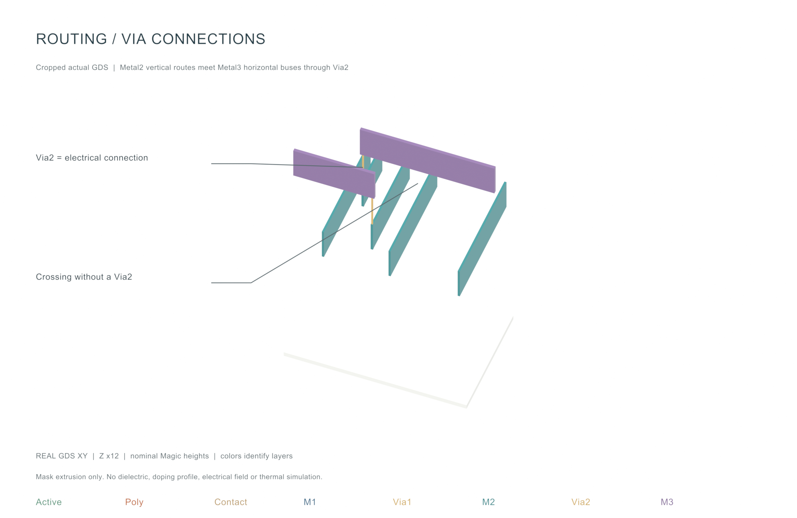

BLENDER · 实际 GDS 的三维教学可视化 · 2026-10-18
从二维版图，看到上下层如何连接
将当前 r5 单像素模拟测试宏导入 Blender，得到可以旋转、隐藏图层和调整观察角度的三维模型。下面三幅图均由 Blender 实际渲染。
平面坐标来自真实 GDS，包含 9,074 个多边形；Z 使用当前锁定 Magic 技术文件的名义高度，并统一放大 12 倍。这是层叠几何可视化；没有新增电气、热学、电磁或工艺仿真。颜色用于区分图层，不代表材料本色。
01 整体：器件与三层金属怎样组织
本次展示的是 39 MOS 模拟测试宏，平面范围为 637.03 × 200.36 µm。下方有源区与 Poly 构成器件的版图图形，上方金属承担连接和供电。这里仅出现 Metal1–Metal3；不能据此认为所用工艺只有三层金属。数字宏、pad、ESD、封装和外部 MicroLED 没有加入本次模型。

从整体观察布线跨度、金属层的相对位置及器件分布。白色底板仅是展示支撑面，不表示晶圆厚度；介质未绘出，图中间隙不表示真实空气腔。
02 器件局部：Contact 怎样接到 Metal1
选取参考源器件的栅极接触端。橙色为 Poly，绿色为有源区，细柱为接触孔，蓝色为 Metal1。Poly 接触与扩散区接触的起始高度不同，脚本已根据实际图层覆盖进行区分。上方的 Metal2 通过 Via1 接到 Metal1；局部裁切之外的连线未显示。

完整宏中包含 7,505 个 Contact：7,055 个扩散区接触、450 个 Poly 接触。井和有源区的“厚度”只是技术文件的显示注记，不能作为掺杂深度或真实 MOS 工艺截面。
03 布线局部：交叉不等于在交点导通
紫色 Metal3 跨过青色 Metal2。有 Via2 的位置，形成上下金属的局部连接；没有 Via2 的交叉位置，则没有这条局部垂直导电路径。是否在其他位置连接到同一个网络，需要继续查看完整网表。

两个标注点已直接与 GDS 核对：(194.74, 50) µm 有 M2/Via2/M3；(205.26, 50) µm 有 M2/M3，但没有 Via2。全宏 Via1 和 Via2 各 136 个，均检查了上下金属覆盖。
如何在 Blender 中继续看
打开 single-pixel-r5.blend，右上方 Scene 下拉框可切换 01 Full macro、02 Reference device、03 Routing and vias。Outliner 中展开 GDS layers - independent visibility，可按图层隐藏对象。用视图右上角导航控件旋转，滚轮缩放；按数字键盘 0 回到已设置的相机视角，F12 渲染当前场景。
没有数字键盘时，可以使用 View → Cameras → Active Camera。Mac 可用视图导航控件操作，避免依赖鼠标中键。模型内各图层保持独立；对它们移动、缩放或删改后，便不能再视为原始 GDS 的一致副本。
这次尝试验证了什么
| 项目 | 结果或范围 |
|---|
| 真实平面几何 | 选中图层与原 GDS 完全核对；保存后重新打开 .blend，逐层顶点按 1 nm 数据库精度核查。 |
| 名义层高 | 来源为锁定 GF180MCU Magic tech 第 3269–3278 行；Z ×12 仅用于观察。 |
| 可编辑性 | 三个场景、分层 Mesh、相机和标注均保存在 .blend。 |
| 本次没有验证 | 电流、电场、温度、寄生参数、制造可靠性；这些仍须分别由 SPICE/PEX、TCAD、热学或电磁工具处理。 |
后续可沿用这一流程制作接触孔、通孔阵列、封装互连和布线寄生的教学图。电流或温度分布只有在导入对应求解器的真实结果后，才应作为“仿真结果”着色。
来源、版本与复现
Blender 4.5.11 LTS，官方 Apple Silicon 包，已核对官方 SHA-256。工具保存在本仓库 build/blender-demo/tools/Blender.app，未覆盖系统应用。
GDS：evidence/layout-v3/r5/startup_test_macro.gds；几何与图层审查：evidence/blender-demo/stack-audit.json；本场景核查：validation.json。
build/layout/venv/bin/python scripts/blender_demo/prepare_geometry.py
build/blender-demo/tools/Blender.app/Contents/MacOS/Blender --background --python scripts/blender_demo/build_scene.py
build/blender-demo/tools/Blender.app/Contents/MacOS/Blender --background --python scripts/blender_demo/validate_scene.py
官方资料：Blender 4.5 LTS · 官方发布文件与校验值。本页面与渲染图属于现有研究报告的可视化附录，不改变电路或流片验证状态。